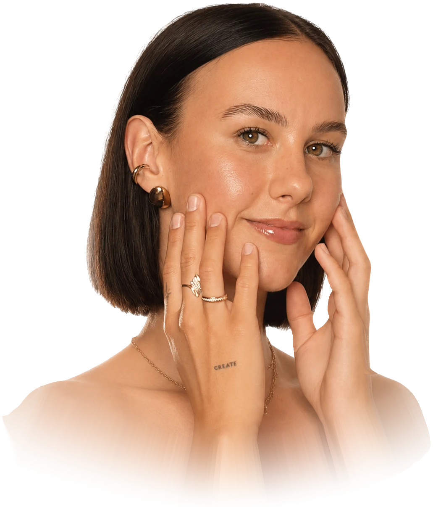
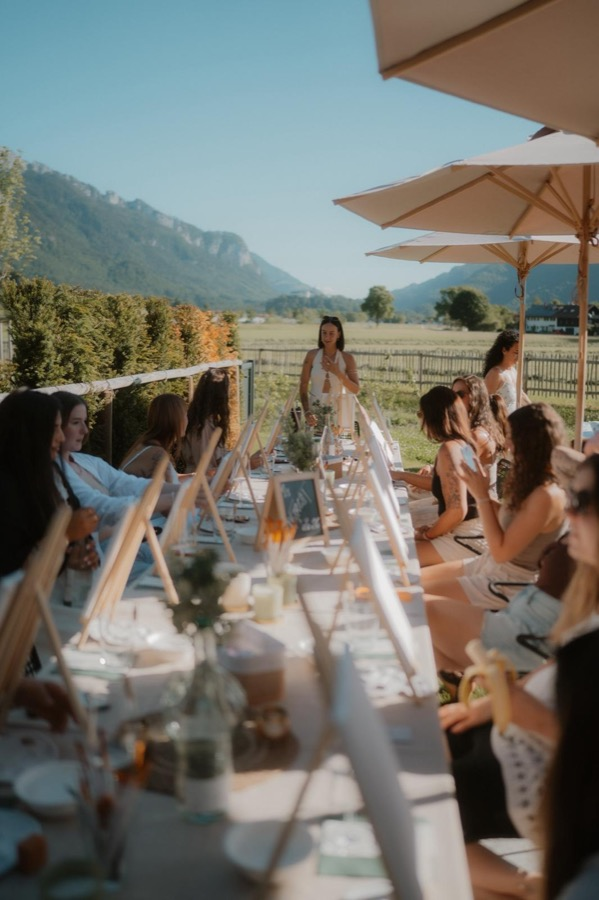
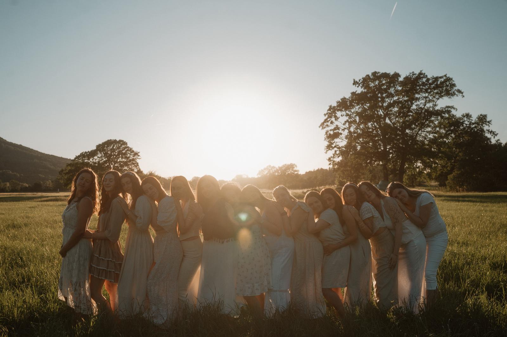
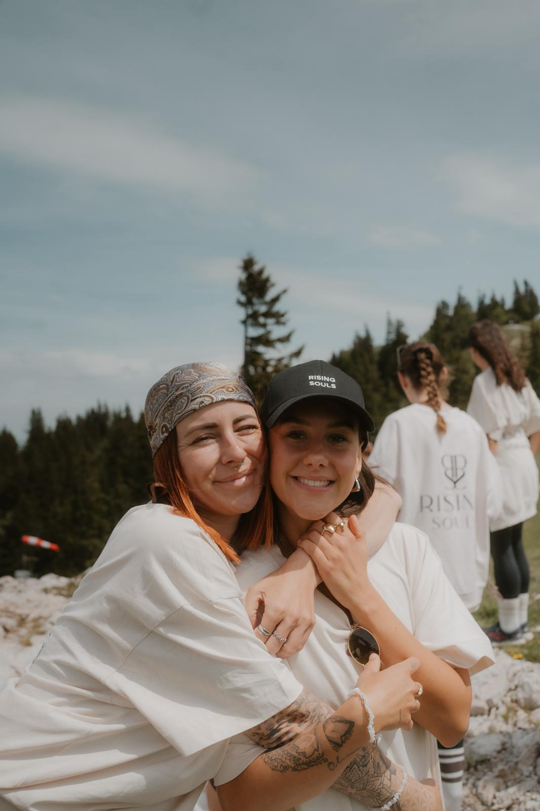

TAMARA / RISING SOULSGEMEINSAM WEITER.
DEIN TEAM. DEIN NÄCHSTER SCHRITT.
Großes beginnt
mit dir.
Und einem Wir.
Ein Ort für deine Ziele, dein Wissen und die Menschen, die mit dir wachsen. Willkommen bei Rising Souls.
Deinen Raum entdeckenMenschen. Ein gemeinsames Wir.
Sprachen. Viele Perspektiven.
Dein Wachstum. In deinem Tempo.
Mehr Überblick.
Mehr Raum für dich.
Dein nächster Schritt ist schon da. Aufgaben, Wissen und Austausch kommen zusammen. Auf deinem Handy. Oder am großen Bildschirm.
Ein guter Tag, Lena.
Kleine Schritte.
Spürbarer Fortschritt.
Du bleibst dran. Und das zählt.
Eine Story.
Deine Perspektive.
Zeige, welches Produkt dich gerade begleitet.
Aufgabe in der App ansehen ↗Deine nächsten Schritte
1 von 3 erledigtDein nächster Aha-Moment.

DEINE ACADEMYDeine Geschichte.
Deine erste Story.
Praktische Impulse für Content, der sich nach dir anfühlt. Mit gespeicherten Fortschritten zurück in deine nächste Lektion.
Zusammen geht mehr.

Eine Frage?
Ein Erfolg?
Teile ihn mit uns.
Finde Menschen in deiner Region, tausche dich im Forum aus und feiere die nächsten Schritte miteinander.
Community entdecken ↗↳ Probiere die Tabs und Aufgaben aus.Ein Einblick mit Beispieldaten.

02 / WAS UNS VERBINDET
Dein Weg ist
persönlich.
Nicht einsam.
Die erste Nachricht. Eine gute Idee. Jemand, der sagt: „Ich kenne das.“ Hinter Rising Souls stehen Menschen, die Erfahrungen teilen und sich gegenseitig weiterbringen.
Wir lernen miteinander, feiern kleine Erfolge und bleiben auch dann verbunden, wenn der Alltag gerade anders aussieht.
Lerne die Community kennen ↗GEMEINSAM WEITERGEHEN.
Für alles,
was du vorhast.
Weniger zwischen Chats, Notizen und Links wechseln. Mehr Zeit für das, was du wirklich bewegen möchtest.
01Klarheit für deinen Tag
+
Aufgaben abhaken, persönliche Ziele verfolgen und kommende Termine im Blick behalten. Dein Home-Screen bringt zusammen, was jetzt wichtig ist.
02Wissen, das bleibt
+
Kurse, Produktwissen, Aufzeichnungen und Gesprächsleitfäden. Speichere deinen Fortschritt und finde schnell zurück zu den Inhalten, die dich weiterbringen.
03Ideen, wenn du sie brauchst
+
Content-Vorlagen aus der Academy und ein KI-Assistent mit Teamwissen und Quellen helfen beim Formulieren, Planen und Vorbereiten.
04Menschen an deiner Seite
+
Fokusgruppen, direkter Chat, Forum und Netzwerk. Stelle deine Fragen und feiere Fortschritte mit Menschen, die deinen Weg verstehen.
DEIN RAUM ZUM WACHSEN
Es beginnt
mit deinem Schritt.
Rising Souls erleben Entdecke den interaktiven App-Entwurf.